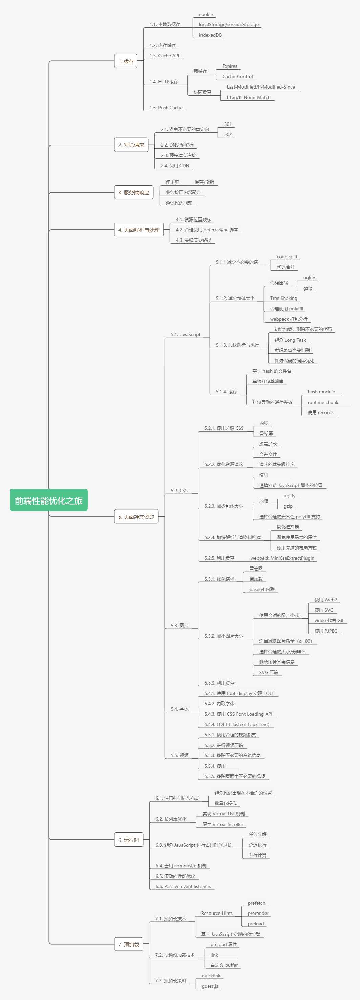

性能优化一直以来都是前端工程领域中的一个重要部分。很多资料表明，网站应用的性能优化对于提高用户留存、转化率等都有积极影响。可以理解为，提升你的网站性能，就是提升你的业务数据（甚至是业务收入）。
性能优化广义上包含前端优化和后端优化。后端优化的关注点更多的时候是在增加资源利用率、降低资源成本以及提高稳定性上。相较于后端，前端的性能优化会更直接与用户的体验挂钩。从用户体验侧来说，前端服务 5s 的加载时间优化缩减 80%(1s) 与后端服务 50ms 的响应优化缩减 80%(10ms) 相比，用户的体验提升会更大。因此很多时候，与体验相关的性能的瓶颈会出现在前端。
我和一些同学接触的过程中，发现作为前端工程师，大家其实都具备一定的性能优化意识，同时也有自己的优化“武器库”，例如懒加载、资源合并、避免 reflow 等等。虽然大家对性能优化都有自己的思路，不过大多是分散在某几个点，较难形成一个完整的体系。业界也有很多优质的资料，例如雅虎的性能优化 35 条，但是性能优化作为一个系统性工程，大家想要系统性地去学习并不容易。
语义化是指用合理HTML标记以及其特有的属性去格式化文档内容。机器在需要更少的人类干预的情况下能够研究和收集信息,让网页能够被机器理解,最终让人类受益。即用正确的标签做正确的事。
① 有利于搜索引擎抓取
② 结构清晰的HTML在团队合作中的作用：代码可读、便于维护、提高开发效率、快速达成共识、利于二次开发。
③ 有利于盲人屏幕阅读器
优化一般对于css、js是建议使用外联式来进行导入。我们可以对css、js做相应的规划也可以减少css、js的个数以减少http请求。同时也要注重减少重复代码，注重代码重复利用，以达到用最少的代码干最多的事。同时当项目要投入上线使用的时候，可以对css、js文件进行压缩，文件的减小可以加速文件的链接导入，以便加速网页的加载渲染。
通过在线网站对html，css，js文件压缩可参考资料：前端性能优化（一）-- 文件的压缩与合并
可通过使用webpack，gulp等工具对Js文件进行合并。
多个服务器请求会对站点的性能产生显著的影响。对一张图片进行导入又是一个http请求，因此我们应该减少图片的导入数量以便减少http请求。此处，我们必须提到一个名词“css精灵spirit”。css精灵是指包含多个不同的图标、按钮或图形的单个图像。因此我们可以把多张背景图片合并为一张然后对背景图片进行相应的定位。同时使用PNG8格式的图片相对于GIF来说比较少。而对于内容图片，可以对其进行适当的压缩，可以加快文档内容加载，或者如果是需要用户下载的图片，小的图片可以加快用户下载的速度。
使用较为广泛的web图片格式有：JPEG/JPG、PNG、WEBP、Base64、SVG。
特点是有损压缩，体积小，加载快，不支持透明。
使用场景：JPG适合用于呈现热菜丰富的图片，在日常的开发中，JPG图片经常作为大的背景图、轮播图或是Banner图。比如两大电商网站对大图片的处理，就是对JPG图片应用场景的最佳写照。用JPG来呈现大图片，既可以保留图片的质量，又不会担心图片的体积，是一种比较广泛使用的方案。
缺点：在处理一些矢量图形和logo等这些线条感很强、颜色对比强烈的图片时，认为压缩就导致图片模糊非常明显。另外，JPG图像不支持透明度处理，透明图片只能用PNG来呈现了。
特点是无损压缩、质量高、体积大、支持透明
优点：无损压缩的高保真图片格式。8和24都是二进制数的位数，8位的PNG支持256中颜色，24位的PNG可以支持1600万种颜色。在不考虑文件大小只在乎最佳的显示效果时，推荐使用PNG-24。但是在适合使用PNG时会优先选择PNG-8
应用场景：主要用PNG来呈现小的LOGO、颜色简单对比强烈的图片或是背景。
特点是文本文件，体积小，不失真，兼容性好
优点：SVG是一种基于XML语法的图像格式。SVG对图像的处理不是基于像素，而是基于对图像的形状描述。
和JPG、PNG相比较，SVG文件体积更小，可压缩性更强。SVG作为矢量图最大的优点在于图片可以无限放大还不失真，一张SVG图片可以适配多种分辨率。另外SVG是文本文件，可以像写代码一样定义SVG，放在HTML中称为DOM的一部分。也可以把对图像的描述写入以.svg为后缀的文件中，在img标签中引入即可。<img src="文件名.svg" alt="">
优点：WebP是一款比JPG、PNG等在压缩方面更加优越的图片格式，同时也不会影响其图片质量，使用该格式时最好将同名文件格式化，当检测浏览器不兼容时自动切换jpg格式
缺点：是一个相对较新的技术，所以对于目前市面上的浏览器能否完美的兼容，其可用和实用性就变得很现实了，再好的东西如果没有好的兼容性，也是非常难以普及和被广泛使用的
优点：减少请求，加快首屏数据显示。对于jpg格式的图片，每一个图片相当于一次http请求，图片多了的话，服务器耗性能比较严重。而将jpg转化成base64格式的图片，则极大地减少了请求数，因为Base是文本格式。
缺点：base64格式图片比原图大，占用更多存储空间，同时，浏览器不会对该资源缓存。
使用方法：background:url(data:image/png;base64,{img_data})
应用场景：一般对于小于10KB大小的图片进行base64转码。
至于动态图有GIF与APNG：后者APNG这东西是mozilla搞出来的， 它是24位的，而且也是动图，可以容纳1680万种颜色，也是为了取代GIF，但是....也就火狐支持，IE10和chrome，safari全部不行， 如果说gif图片是卡片机的话， APNG就是单反， 测试浏览器是否支持apng格式
除了根据语义加标记之外，HTML文档还需要用有效的代码来编写，如果代码是无效的，浏览器会尝试解释标记本身，有时候会产生错误的结果。更糟的是，如果发送具有正确的MIME类型的XHTML文档，理解XML的浏览器将不显示无效的页面。因为浏览器需要知道要使用什么DTD（文档类型定义）才能正确地处理页面，所以对页面进行有效性验证要求有DOCTYPE声明。
有效性验证工具径：
① W3C验证器（bookmarklet），这是一小段可以存储在浏览器的书签或收藏夹中的Javascript。单击这个书签就会触发Javascript动作。
②可以访问http://validator.w3.org/，通过输入自己的URL来对自己的站点来进行在线验证。
③使用firefox浏览器的可以下载插件Firefox Web Developer Extension
1、内容优化
① 尽量减少HTTP请求：常见方法包括合并多个CSS文件和JavaScript文件，利用CSS Sprites整合图像，Image map（图像中不同的区域设置不同的链接），内联图象（使用 data: URL scheme 在实际的页面嵌入图像数据）等。
② 减少DNS查找，一般dns查找需要花费20-120ms，Windows的DNS缓存，可以通过ipconfig /displaydns 这个命令来查看。详细资料http://www.chinaz.com/web/2015/0417/399728.shtml
③ 避免重定向
④ 使Ajax可缓存
⑤ 延迟加载组件：考虑哪些内容是页面呈现时所必需首先加载的、哪些内容和结构可以稍后再加载，根据这个优先级进行设定。
⑥ 预加载组件：预加载是在浏览器空闲时请求将来可能会用到的页面内容（如图像、样式表和脚本）。当用户要访问下一个页面时，页面中的内容大部分已经加载到缓存中了，因此可以大大改善访问速度。
⑦ 减少DOM元素数量：页面中存在大量DOM 元素，会导致JavaScript遍历DOM的效率变慢。
⑧根据域名划分页面内容：把页面内容划分成若干部分可以使你最大限度地实现平行下载。但要确保你使用的域名数量在2个到4个之间（否则与第2条冲突）。
⑨ 最小化iframe的数量：iframes 提供了一个简单的方式把一个网站的内容嵌入到另一个网站中。但其创建速度比其他包括JavaScript和CSS的DOM元素的创建慢了1-2个数量级。
⑩ 避免404：HTTP请求时间消耗是很大的，因此使用HTTP请求来获得一个没有用处的响应（例如404没有找到页面）是完全没有必要的，它只会降低用户体验而不会有一点好处。
2、服务器优化
① 使用内容分发网络（CDN）：把你的网站内容分散到多个、处于不同地域位置的服务器上可以加快下载速度。
② 添加Expires或Cache-Control信息头：对于静态内容，可设置文件头过期时间Expires的值为“Never expire（永不过期）”；对于动态内容，可使用恰当的Cache-Control文件头来帮助浏览器进行有条件的请求。
③ Gzip压缩
④ 设置ETag：ETags（Entity tags，实体标签）是web服务器和浏览器用于判断浏览器缓存中的内容和服务器中的原始内容是否匹配的一种机制。
⑤ 提前刷新缓冲区：当用户请求一个页面时，服务器会花费200到500毫秒用于后台组织HTML文件。在这期间，浏览器会一直空闲等待数据返回。在PHP中，可以使用flush()方法，它允许你把已经编译的好的部分HTML响应文件先发送给浏览器，这时浏览器就会可以下载文件中的内容（脚本等）而后台同时处理剩余的HTML页面。
⑥ 对Ajax请求使用GET方法：当使用XMLHttpRequest时，浏览器中的POST方法会首先发送文件头，然后才发送数据。因此使用GET最为恰当。
⑦ 避免空的图像src
3、Cookie优化
① 减小cookie大小：去除不必要的coockie，并使coockie体积尽量小以减少对用户响应的影响
② 针对Web组件使用域名无关的Cookie：对静态组件的Cookie读取是一种浪费，使用另一个无Cookie的域名来存放静态组件是一个好方法，或者也可以在Cookie中只存放带www的域名。
4、CSS优化
① 将CSS代码放在HTML页面的顶部
② 避免使用CSS表达式：CSS表达式在执行时候的运算量非常大，会对页面性能产生大的影响
③ 使用<link>来代替@import
④ 避免使用Filters：IE独有属性AlphaImageLoader用于修正IE 7以下版本中PNG图片的半透明效果，但它的问题在于浏览器加载图片时它会终止内容的呈现并且冻结浏览器。
5、JavaScript优化
① 将JavaScript脚本放在页面的底部
② 将JavaScript和CSS作为外部文件来引用：在实际应用中使用外部文件可以提高页面速度，因为JavaScript和CSS文件都能在浏览器中产生缓存。
③ 缩小JavaScript和CSS
④ 删除重复的脚本
⑤ 最小化DOM的访问：使用JavaScript访问DOM元素比较慢
⑥ 开发智能的事件处理程序
6、图像优化
① 优化图片大小
② 通过CSS Sprites优化图片
③ 不要在HTML中使用缩放图片
④ favicon.ico要小而且可缓存
7、针对移动优化
① 保持组件大小在25KB以下：主要是因为iPhone不能缓存大于25K的文件（注意这里指的是解压缩后的大小）。
② 将组件打包成为一个复合文档：把页面内容打包成复合文本就如同带有多附件的Email，它能够使你在一个HTTP请求中获取多个组件。
参考资料：
https://www.cnblogs.com/diligenceday/p/4472035.html
https://developer.yahoo.com/performance/rules.html
https://github.com/creeperyang/blog/issues/1
https://developer.yahoo.com/performance/rules.html
